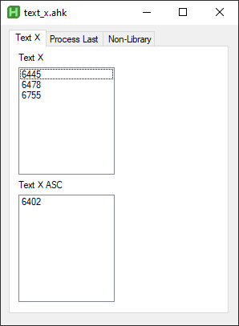

Text X Program
The Text X program allows you to track cases that you cannot put text on or need to be processed last. The program will automatically distinguish DS/ASC cases.
To add an entry to the Text X list from Esprit, press Shift + X.
To add an entry to the Process Last list from Esprit, press Shift + Z.
You can also add entries manually by pressing Ctrl + N or right clicking and pressing New from the menu.
You can delete selected entries by pressing the Delete key or right clicking and selecting Delete from the menu.
You can copy entries with Ctrl+C and cut entries with Ctrl+X. You can also perform these actions by right clicking and selecting Cut or Copy from the menu.